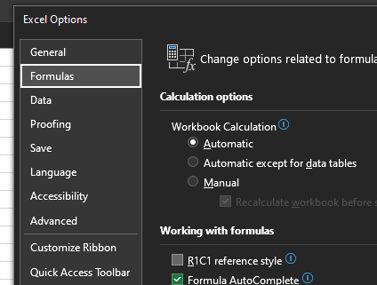
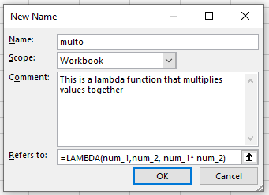

No feedback found for this session
Excel programming
excel
intermediate
Excel skill-builder
This is a session in our intermediate-level Excel skill builder course. This consists of five practical training sessions, designed to be taken together, that are aimed at helping users with some prior Excel experience build and consolidate their skills. The sessions are:
- Excel foundations 1
- Excel foundations 2
- Lookups in Excel
- Excel programming (this session)
- Pivot tables and pivot charts
Session materials
Session outline
- this session is about programming in Excel
- it aims to show several tools that can help you build more robust Excel workbooks
- implicit intersection and naming
- R1C1
INDIRECT()- array formulas
- lambda functions
Getting started
- files for today:
-
s04_exercises.xlsxis a starting-point for the exercises today -
s04_exercises_final.xlsxis the end-point for the exercises today - it’s there to help if you get stuck or lost
-
Task
- open the sample spreadsheet
s04_exercises.xlsxand have a look around
Naming reminder
Task
- in the
s04_exercises.xlsxworkbook, go to theNames, indirect, R1C1worksheet - please name the table “raw_data”
- please name the average age cell “age_average”
- please name the three summary cells for Service_duration “duration_summary”
Structured referencing and the implicit intersection operator
- we’ve already seen that we can use the shorthand
table[col]to refer to a column - within a table, we can use a modification of this to quickly refer to values
- within a table, you can refer to values in a column using the implicit intersection operator
[@col]- (if you’re using an older version of Excel, you might also see this written as
[@[Service_duration]])
- (if you’re using an older version of Excel, you might also see this written as
R1C1
- R1C1 gives an alternative way of referring to cells
- slightly more complicated, but more precise, and less confusing
- largely encountered in VBA, but available and helpful in standard Excel
Task
- Switch
s04_exercises.xlsxto R1C1 byFile>Options>Formulas>R1C1 reference style
- in R1C1, column letters (A, B, C,…) are replaced by numbers
- row numbers remain as row numbers
- R1C1 = A1
- R2C8 = H2
Task
- in R16C4, please sum up the
Service_durationcolumn using R1C1 - switch to inspect formulas (
Ctrl+ backtick)
Absolute/relative R1C1 referencing
- Provide an absolute reference by giving a row and column number - like R2C2
- Provide a relative reference by adding a numeric offset in square brackets
- relative to the cell that the reference is written in
- from col 8, row 2, we’d reference col 2, row 2 by
RC[-6]
- the same combination of absolute/relative reference styles available as in A1 referencing
Why bother with R1C1?
- R1C1 adds a bit of complexity to simple formulas
- but it makes complicated formulas (and repeated formulas) much easier to understand
- this is a big help when working with more complex Excel documents - particularly if you’re debugging something that’s gone wrong
Task
- in column 6, row 2, copy the name “Keeshon Abdourahma ne” by using the formula
=RC[-5] - now flash-fill down column 6 to duplicate all the names in column 1 (you should see the
First namecolumn populate too) - now switch off inspect formulas (
Ctrl+ backtick) - now switch back to A1 and re-inspect formulas
- R1C1 gives the same formulas for the same work across different columns
- we have to work this out by hand with A1 referencing - the row number would be different each time
- this helps us understand quickly when and where a formula is repeated
- (apparently) faster with very complex sheets - but given that Excel benchmarking is a closed book to me, I’ve been unable to find any solid information about this anywhere.
Task
- Please switch back to A1 referencing
- Please switch out of the formula auditing view, if necessary
INDIRECT()
-
INDIRECT()allows a user to specify a cell reference in a cell - that reduces the amount of fiddling about deep inside formulas if/when cell references change
- break the references out using INDIRECT, and edit the reference directly in the worksheet.
INDIRECT() tasks
- the formula
=LEFT(A1, SEARCH(" ", A1))effectively is a first-name finder - it returns all the text before the first space - you can see this formula in action in the
First namecolumn
Task
- There are four
INDIRECT()examples in rows 19-22 - Please review them and make sure that you see how
INDIRECT()can be used in four different ways:
- by supplying an A1 reference
- by supplying an R1C1 reference by adding the argument FALSE inside
INDIRECT() - by referencing a named cell
- by concatenating a reference together from partial references using
&
Array formulas
- usually, formulas produce one cell’s worth of output
- array formulas return > 1 cell
- new, M365 only
Task
- In the Array worksheet, there are four exercises to try
-
=SORT(UNIQUE(array_table[num1]))will return a sorted column of unique values -
=FILTER(array_table[num1], array_table[num1] > 6)will filter a column by values -
=FILTER(array_table[num1], array_table[num1] > array_table[num2])will filter a column by another column -
=RANDARRAY(20, 2, 1, 10, TRUE)will generate two columns of random values between 1 and 10
Lambda functions
- lambda functions are a way of re-using complex formulas without copy-pasting
- how does it work?
- take an existing (working) formula
- work out what the inputs are - usually, which cells are referenced
- convert that function into a named lambda function which we can re-use
Making a lambda function
- imagine we want to convert
= A3 * B3to a lambda - start with the lambda outline
= LAMBDA() - next, add test values in a second set of brackets -
= LAMBDA()(A3, B3) - we now invent parameter names (like variable names) for each of those values, and add them:
= LAMBDA(n_1, n_2, )(A3, B3) - then add the formula that we want to replicate
= LAMBDA(n_1, n_2, n_1 * n_2)(A3, B3)
Saving a lambda function
- once you’ve tested and checked your lambda with a range of test values, copy your lambda formula
- then open the name manager (
Ctrl+F3) - create a new name, then name your lambda definition using the New Name interface
- paste your lambda into the Refers to: section
- omit the test values - so just
= LAMBDA(n_1, n_2, n_1 * n_2)
- omit the test values - so just
- test your new lambda function
Task
- build a simple formula based on two columns in the lambda sheet (like
col1 * col2) - in a new cell translate that into a lambda function, like
=LAMBDA(num_1,num_2, num_1* num_2)(A1,B1) - then copy just the lambda part, and open the name manager (
Ctrl+F3) - New… 
Lambda functions
- a real-ish example: converting CHI to DoB
- you can use the following 😱 formula:
=DATE(IF(RIGHT(LEFT(G2, 6), 2) > RIGHT(YEAR(TODAY()), 2), 19, 20) & RIGHT(LEFT(G2, 6), 2), MID(LEFT(G2, 6), 3, 2), LEFT(LEFT(G2, 6), 2)) - that’s a horrifying thing to paste about, so we can make this into a lambda
- test version
=LAMBDA(chi, DATE(IF(RIGHT(LEFT(chi, 6), 2) > RIGHT(YEAR(TODAY()), 2), 19, 20)&RIGHT(LEFT(chi, 6), 2), MID(LEFT(chi, 6), 3, 2), LEFT(LEFT(chi, 6), 2)))(G2) - name manager then to
CHI_TO_DOB
Thank yous
I’m grateful to Jennifer Watt, John Mackintosh, Duncan Sage, David Coigach, Michael Robb, Angela Godfrey, Spela Oberstar, Andrew Christopherson, and other members of the KIND network for their valuable suggestions and corrections to these training materials